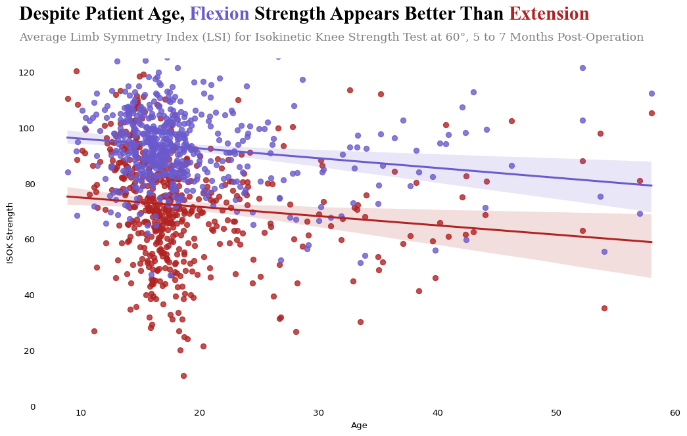
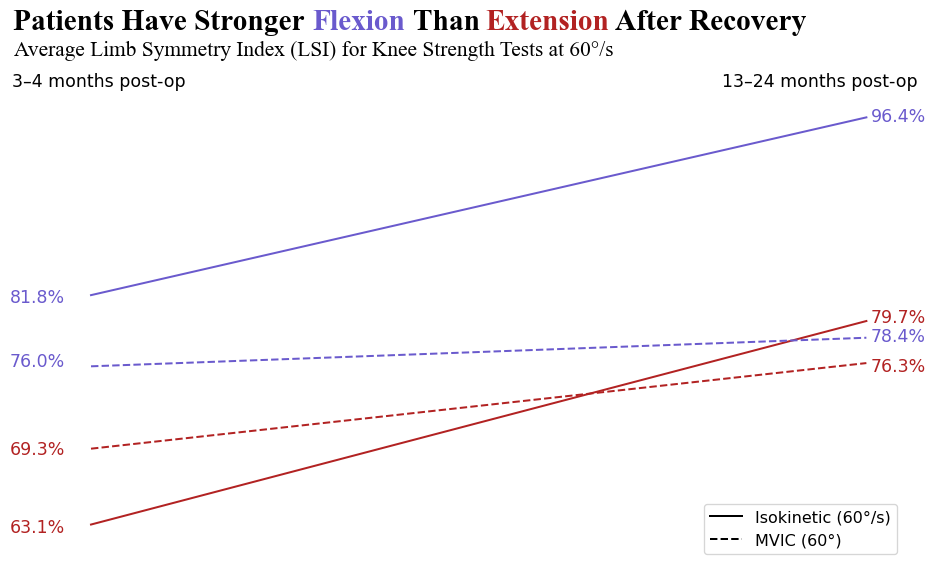
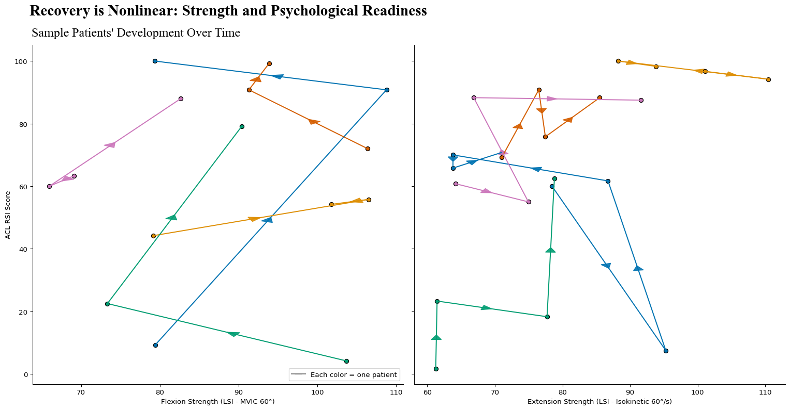

#import dependencies
import pandas as pd
import matplotlib.pyplot as plt
import seaborn as sns
from matplotlib.lines import Line2D
#load data
aclr = pd.read_csv('cleaned_aclr_data.csv')3 Visualizations
3.1 Regression Plot - Strength vs Age
#filter data for only patients at 5 to 7 months post operation
aclr_filtered = aclr[aclr['tss_dashboard'] == '5 to 7 months']
#set figure size
plt.figure(figsize=(11, 7))
#melting data for isok variables, adding age to isok dataframe
isok = aclr_filtered[[col for col in aclr.columns if 'isok' in col]].copy()
isok['age'] = aclr_filtered['age']
isok = isok.melt(id_vars='age', var_name="Measurement", value_name="Value")
isok.replace([float('inf'), float('-inf')], float('nan'), inplace=True)
isok.dropna(inplace=True)
#averaging value by age
isok_avg = isok.groupby(['age', 'Measurement'])['Value'].mean().reset_index()
#seperating into extension and flexion measurements
isok_measurements = isok_avg['Measurement'].unique()
#plotting isok regression plot
for m in isok_measurements:
subset = isok_avg[isok_avg['Measurement'] == m]
label = 'Extension' if 'ext' in m else 'Flexion'
color = 'firebrick' if 'ext' in m else 'slateblue'
sns.regplot(data=subset, x='age', y='Value', label= label, color = color, scatter=True)
plt.tick_params(axis='both', which='both', length=0)
plt.xlabel('Age')
plt.ylabel('ISOK Strength')
#adding title and subtitle
plt.title('Average Limb Symmetry Index (LSI) for Isokinetic Knee Strength Test at 60°, 5 to 7 Months Post-Operation',loc = 'left', x = -0.03, family = 'serif', pad = 20, fontsize=13, color='gray')
plt.text(-0.03, 1.15, 'Despite Patient Age,', va='top', font='Times New Roman', fontsize=22, fontweight='bold', transform=plt.gca().transAxes)
plt.text(0.235, 1.15, "Flexion", va='top', font='Times New Roman', color = 'slateblue', fontsize=22, fontweight='bold', transform=plt.gca().transAxes)
plt.text(0.337, 1.15, 'Strength Appears Better Than', va='top', font='Times New Roman', fontsize=22, fontweight='bold', transform=plt.gca().transAxes)
plt.text(0.732, 1.15, "Extension", va='top', font='Times New Roman', color = 'firebrick', fontsize=22, fontweight='bold', transform=plt.gca().transAxes)
#setting y range (LSI above 125 are rare)
plt.ylim(0, 125)
#despine and tight layout
sns.despine(top=True, right=True, left=True, bottom=True)
plt.tight_layout()
plt.savefig('strengthreg.jpg', format='jpg', dpi=300, bbox_inches='tight')
3.2 Spaghetti Plot - early and late recovery
#group data by time since surgery
acl_grouped = aclr.groupby('tss_dashboard').agg(
mean_ext_mvic_60=('lsi_ext_mvic_60', 'mean'),
mean_flex_mvic=('lsi_flex_mvic_60', 'mean'),
mean_ext_isok=('lsi_ext_isok_60', 'mean'),
mean_flex_isok=('lsi_flex_isok_60', 'mean')
).reset_index()
#filter out and order only early and late time windows
new_order = [1,2,3,0,4,5]
acl_grouped = acl_grouped.iloc[new_order]
acl_grouped = acl_grouped.reset_index(drop=True)
acl_grouped = acl_grouped.drop(index=[1,2,4,5])
acl_grouped = acl_grouped.reset_index(drop=True)
fig, ax = plt.subplots(figsize=(10, 6))
#graph slopes
ax.plot(acl_grouped['tss_dashboard'], acl_grouped['mean_ext_isok'], linestyle='-', color='firebrick', label='Extension Isokinetic')
ax.plot(acl_grouped['tss_dashboard'], acl_grouped['mean_flex_isok'], linestyle='-', color='slateblue', label='Flexion Isokinetic')
ax.plot(acl_grouped['tss_dashboard'], acl_grouped['mean_flex_mvic'], linestyle='--', color='slateblue', label='Flexion MVIC')
ax.plot(acl_grouped['tss_dashboard'], acl_grouped['mean_ext_mvic_60'], linestyle='--', color='firebrick', label='Extension MVIC')
#remove unnecessary scaffolding
ax.set_ylim(60, 100)
ax.set_yticks([])
ax.set_ylabel('')
ax.set_xticks([])
ax.set_xlabel('')
sns.despine(top=True, right=True, left=True, bottom=True)
#add a legend for line type
custom_legend = [
Line2D([0], [0], color='black', linestyle='-', label='Isokinetic (60°/s)'),
Line2D([0], [0], color='black', linestyle='--', label='MVIC (60°)')
]
ax.legend(handles=custom_legend, loc='lower right', fontsize=12)
#add color coded title (with degrees)
plt.text(0.125, 1.13, 'Patients Have Stronger', ha='center', va='top', fontsize=22, font='Times New Roman', fontweight='bold', transform=ax.transAxes)
plt.text(0.36, 1.13, 'Flexion', ha='center', va='top', fontsize=22, color='slateblue', font='Times New Roman', fontweight='bold', transform=ax.transAxes)
plt.text(0.462, 1.13, 'Than', ha='center', va='top', fontsize=22, font='Times New Roman', fontweight='bold', transform=ax.transAxes)
plt.text(0.58, 1.13, 'Extension', ha='center', va='top', fontsize=22, color='firebrick', font='Times New Roman', fontweight='bold', transform=ax.transAxes)
plt.text(0.772, 1.13, 'After Recovery', ha='center', va='top', fontsize=22, font='Times New Roman', fontweight='bold', transform=ax.transAxes)
#add a subtitle/y axis label
plt.text(-0.045, 1.065, 'Average Limb Symmetry Index (LSI) for Knee Strength Tests at 60°/s',
ha='left', va='top', fontsize=16, font='Times New Roman', transform=ax.transAxes)
#label start and end values
plt.text(-0.05, 0.53, '81.8%', color='slateblue', fontsize=13, transform=ax.transAxes)
plt.text(0.96, 0.9, '96.4%', color='slateblue', fontsize=13, transform=ax.transAxes)
plt.text(-0.05, 0.4, '76.0%', color='slateblue', fontsize=13, transform=ax.transAxes)
plt.text(0.96, 0.45, '78.4%', color='slateblue', fontsize=13, transform=ax.transAxes)
plt.text(-0.05, 0.06, '63.1%', color='firebrick', fontsize=13, transform=ax.transAxes)
plt.text(0.96, 0.49, '79.7%', color='firebrick', fontsize=13, transform=ax.transAxes)
plt.text(-0.05, 0.22, '69.3%', color='firebrick', fontsize=13, transform=ax.transAxes)
plt.text(0.96, 0.39, '76.3%', color='firebrick', fontsize=13, transform=ax.transAxes)
#label axes
plt.text(0.055, 1, "3–4 months post-op", ha='center', va='top', fontsize=13, transform=ax.transAxes)
plt.text(0.9, 1, "13–24 months post-op", ha='center', va='top', fontsize=13, transform=ax.transAxes)
plt.tight_layout()
plt.savefig('spaghetti.jpg', format='jpg', dpi=300, bbox_inches='tight')
3.3 Connected Scatterplot
#define the selected patients that filter patinets with 2 or more visits and picked the top 5
df_required_2 = aclr.dropna(subset=['lsi_flex_mvic_60', 'acl_rsi', 'tss'])
patient_counts_2 = df_required_2['record_id'].value_counts()
selected_patients_2 = patient_counts_2[patient_counts_2 >= 2].index[:5]
df_selected_2 = df_required_2[df_required_2['record_id'].isin(selected_patients_2)]
#same with iso
df_iso_required = aclr.dropna(subset=['lsi_ext_isok_60', 'acl_rsi', 'tss'])
patient_counts_iso = df_iso_required['record_id'].value_counts()
selected_iso_patients = patient_counts_iso[patient_counts_iso >= 2].index[:5]
df_iso_selected = df_iso_required[df_iso_required['record_id'].isin(selected_iso_patients)]
#make the legend sit inside the plot
fig, axes = plt.subplots(1, 2, figsize=(16, 6), sharey=True)
#first plot the flexion strength vs rsi
palette = sns.color_palette("colorblind", len(selected_patients_2))
for i, pid in enumerate(selected_patients_2):
patient_df = df_selected_2[df_selected_2['record_id'] == pid]
x_vals = patient_df['lsi_flex_mvic_60'].values
y_vals = patient_df['acl_rsi'].values
for j in range(len(x_vals) - 1):
dx = x_vals[j+1] - x_vals[j]
dy = y_vals[j+1] - y_vals[j]
x_mid = (x_vals[j] + x_vals[j+1]) / 2
y_mid = (y_vals[j] + y_vals[j+1]) / 2
axes[0].arrow(x_mid, y_mid,dx * 0.0001, dy * 0.0001,color=palette[i],alpha=0.9,head_width=1.5,head_length=1.5,length_includes_head=True)
axes[0].plot([x_vals[j], x_vals[j+1]], [y_vals[j], y_vals[j+1]], color=palette[i], linewidth=1.5)
axes[0].scatter(x_vals, y_vals, color=palette[i], edgecolor='k')
axes[0].set_xlabel("Flexion Strength (LSI - MVIC 60°)")
axes[0].set_ylabel("ACL-RSI Score")
#make the legend
legend_patch = plt.Line2D([0], [0], marker='_', color='grey', label='Each color = one patient',markerfacecolor='gray', markersize=10)
axes[0].legend(handles=[legend_patch], loc='lower right')
#make the second plot for extension strength vs rsi
palette_ext = sns.color_palette("colorblind", len(selected_iso_patients))
for i, pid in enumerate(selected_iso_patients):
patient_df = df_iso_selected[df_iso_selected['record_id'] == pid]
x_vals = patient_df['lsi_ext_isok_60'].values
y_vals = patient_df['acl_rsi'].values
for j in range(len(x_vals) - 1):
dx = x_vals[j+1] - x_vals[j]
dy = y_vals[j+1] - y_vals[j]
x_mid = (x_vals[j] + x_vals[j+1]) / 2
y_mid = (y_vals[j] + y_vals[j+1]) / 2
axes[1].arrow(x_mid, y_mid,dx * 0.0001, dy * 0.0001,color=palette_ext[i],alpha=0.9,head_width=1.5,head_length=1.5,length_includes_head=True)
axes[1].plot([x_vals[j], x_vals[j+1]], [y_vals[j], y_vals[j+1]], color=palette_ext[i], linewidth=1.5)
axes[1].scatter(x_vals, y_vals, color=palette_ext[i], edgecolor='k')
axes[1].set_xlabel("Extension Strength (LSI - Isokinetic 60°/s)")
#plot final plots
plt.suptitle("Recovery is Nonlinear: Strength and Psychological Readiness", fontsize=22, font = 'Times New Roman', fontweight = 'bold', y=1.03, x =0.29)
fig.text(0.174, 0.972, "Sample Patients' Development Over Time", ha='center', va='top', fontsize=18, font='Times New Roman')
sns.despine(ax=axes[0], top=True, right=True) #take off the top and right spines
sns.despine(ax=axes[1], top=True, right=True)
plt.tight_layout()
plt.savefig('connected.jpg', format='jpg', dpi=300, bbox_inches='tight')